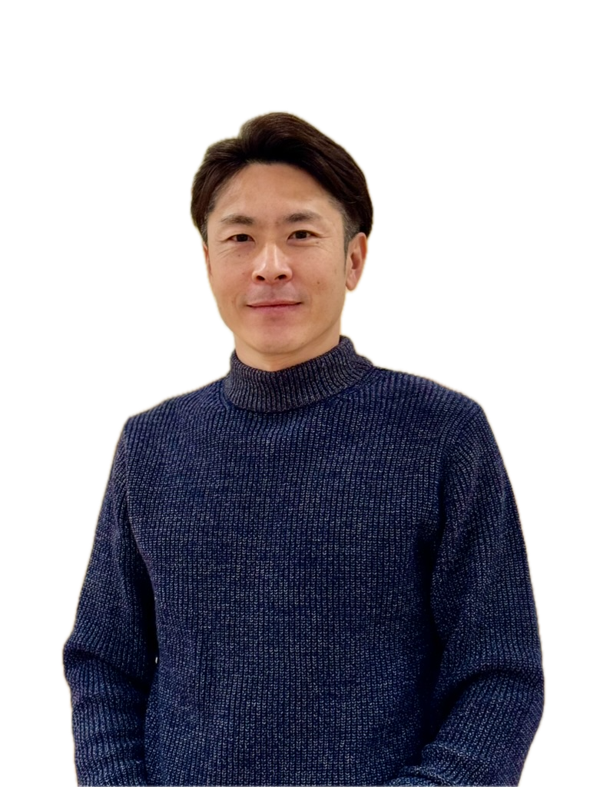

新時代のライフスタイルイノベーター
坂下 たかひろTakahiro Sakashita
誰よりも先に、やってみる。
2000年のブログ開設から、ビットコイン、民泊、GPUマイニング、生成AIまで。黎明期に飛び込み、試し、仕組みにしてきた25年の記録です。

- 2000ブログ開設
- 2005有限会社SSS 設立
- 2006YouTube 初投稿
- 2008キャラ☆ステ 始動
- 2013ビットコイン購入 / Rosetta開設
- 2015Airbnb 民泊開始
- 2016自作マイニング機・独自BIOS
- 2019Uber Eats 東京黎明期
- 2023生成AI 実践・勉強会
やってきたことを、数字で。
広告費・人件費ゼロでイベントを継続運営
キャラ☆ステの年間動員（月2回開催）
全国から組成したマイニングコミュニティ
X 投稿の最高ビュー数
課題と、その解き方。
先駆的なプロジェクトの裏側にあった、技術的な壁と運営上の工夫。クリックで展開します。
2016暗号資産マイニングマシン 自作開発専用マザーボードがない時代に、メーカーと独自BIOSを開発
+
Problem
- 一般的なマザーボードは複数GPUを想定していない
- GPUを挿すとBIOSリソースが枯渇し、起動・認識しない
- マイニング専用製品が市場に存在しない
Approach
- メーカー技術部門と直接交渉し課題を共有
- マイニング特化のカスタムBIOS開発を依頼・実現
- 実機テストを繰り返して安定稼働を確認
Result
- 汎用マザーボードで複数GPUの安定稼働に成功
- YouTube経由で全国300名のコミュニティを組成
- 中国・深センへの共同購入プロジェクトへ発展
2023 — NOW生成AI 多角的実験とコンテンツ制作フローChatGPT 3.5時代から、画像・動画・音楽・文章を網羅的に検証
+
Explore
- LLM: ChatGPT / Claude / Gemini / Manus / Perplexity / Genspark / Skywork
- CLI: Claude Code / Codex CLI / Gemini CLI
- 画像・動画（ImageFX, Runway, KlingAI）・音楽（Suno）
Decide
- 音楽生成は実用レベル → YouTube BGMに採用
- 動画生成はまだ実用前と判断
- 最も安定・効果的なのはライティングと結論
Result
- note.com 記事生成の自動化フローを構築・運用
- 生成AI勉強会を共同主催・講師として1年以上
- 生成AI勉強会@麻布十番を独自に主催
2008 — 2018キャラ☆ステ 究極のローコスト運営広告費ゼロ・人件費ゼロ・前日夜30分の準備で10年継続
+
Problem
- 広告費・人件費の固定費が継続を阻む
- 月2回開催で準備時間を割けない
- 新規イベントは初回集客が最も難しい
Approach
- 準備過程からXで発信し、期待感と口コミを醸成
- 参加者の自律性に任せるセルフサービス運営
- 準備手順を標準化し、必要最小限に絞る
Result
- 毎回150〜300人、年間5,000〜6,000人を動員
- 初回からスムーズにローンチ
- 「過度に頑張らない」ことで10年継続
2019 — NOWUber Eats 新規エリア開拓と働き方の実験東京黎明期から参加、那覇で「Uber Eatsだけで1ヶ月生活」
+
Context
2019年5月、登録は秋葉原での対面のみ、エリアは港区中心だった頃に参加。ギグエコノミーを自分の体で確かめるための実験として始めました。
Experiments
- 沖縄・那覇のサービス開始時に1ヶ月の生活実験、noteで公開
- 地元・金沢のオープン初日に稼働
- バイクで東京中を走り、街の変化を体感
Learnings
- 自由度と収入を両立できる働き方の実証
- 新規エリア初期の課題と可能性を現場で理解
- 6年8ヶ月継続し、プラットフォームの進化を体験
2005修理サポート部門 情報共有システム10名チームのシフト間引き継ぎを標準化
+
Problem
- 常時2名のシフト制で担当が頻繁に入れ替わる
- 修理は複数日にまたがり、情報が属人化
- 顧客が同じ説明を繰り返す状況
Approach
- 案件ごとの記録項目と引き継ぎフォーマットを統一
- 全案件を一箇所に集約し検索可能に
- 交代時の必須チェック項目を定義
Result
- 引き継ぎ漏れをほぼゼロに
- 担当が変わっても一貫した対応で信頼向上
- 以後の事業・コミュニティ運営の土台に
映像の仕事。
カメラ歴15年以上。YouTubeチャンネルで公開している動画の一部です。
経歴。
生成AI 実践活用・コミュニティ運営勉強会 主催・講師
複数LLMとCLIツールを実務で使い分け、note記事生成の自動化フローを運用。勉強会を通じて知見を共有。
映像制作・編集クリエイター
YouTubeチャンネル向けの動画・写真撮影と編集。撮影から編集まで一貫して制作。
暗号資産マイニング事業コミュニティリーダー
自作マイニングマシンの製作から全国300名のグループを主宰。深センへの共同購入を主導。
フォトスタジオ ROSETTA（金沢）オーナー・フォトグラファー
コスプレイヤー専門の撮影スタジオ。内装・照明・背景セットまで自ら設計・制作。
海外金融事業有限会社SSS × 香港拠点法人
海外積立商材の提供、HSBC口座開設ツアー、海外法人設立・口座開設のサポート。
コスプレイベント「キャラ☆ステ」主催・プロデューサー
月2回・毎回150〜300人規模のイベントを10年間、ローコストモデルで運営。
有限会社SSS代表取締役
イベント企画、ITサポート、PC・iPhone修理、国際金融、民泊など多分野で事業を展開。
大手家電量販店 修理サポート部門チームリーダー
10名チームを統括。シフト間の引き継ぎを仕組み化し、業務プロセス改善を実践。
東北大学経済学部 経営学科 学士
できること。
BUSINESS
AI TOOLS
新しいテクノロジーやガジェットに強い関心があり、常に時代の先端を追いかけています。2000年にブログ、2006年にYouTubeを始め、デジタルプラットフォームの黎明期から使い倒してきました。
2013年にビットコインを初購入、2015年にAirbnbホストとして民泊を開始。2019年には登録に秋葉原へ行く必要があった頃のUber Eatsに参加し、那覇での1ヶ月生活実験や金沢のオープン初日稼働など、新規エリアの立ち上がりにも立ち会ってきました。
カメラ歴は15年以上。タイムチケットでのプロフィール撮影は99件。コスプレイベントの主催を通じて、クリエイティブなコミュニティづくりにも力を注いでいます。